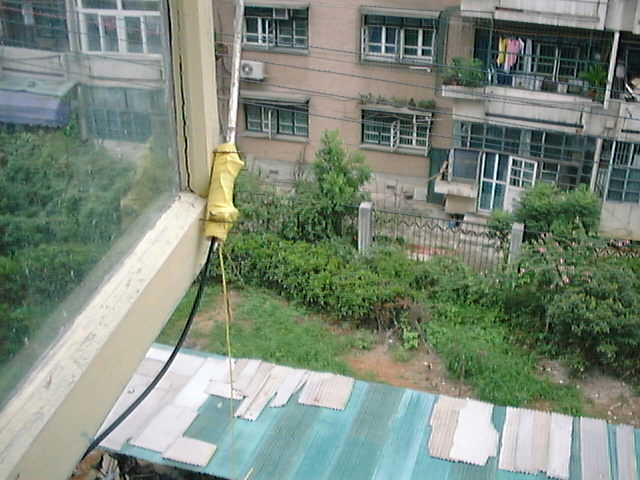

最近我住的公寓房子进行了翻修，虽然面积增加，但是我却再也上不了房顶了。幸好我抢在翻修前把天线从房顶上拆了下来，才没有什么财产损失。可是卷在床下的DP天线能有什么用。
眼看着十年的电台生涯就此要结束，悲痛之际，耳边老是响起BG5ENA沈颂华在BG开放前常说的一句话：穷则思变。是啊，房顶虽然没了，可是电台总还得要玩。
方案之一，是学习VR2RO（BG2JC）王石玉，他把IC706和12V12A的电池装在行李车上，一到周末，就拉上行李车，到官塘住处附近的小山头上，架起DP天线来工作。我住的地方附近山是不少，可是杭州的山不象香港，没有路可以拉着行李车上山；如果是背上山，体力消耗太大，恐怕只能偶而为之。更何况我不喜欢这样把玩电台当一件大事情来做，我喜欢的是上班前、下班后，开机听听，有传播就捏着电键做几个联络。看来王石玉的经验没办法为我所用。
方案之二，是学习VR2GY李锦鸿，在工作的地方架一副天线玩玩。我工作的地方倒是条件不错，七层的房顶，钥匙就在自己手里，我在顶楼又有一个单间，本来就是电台室（我的公司也做无线通讯工程的），电源、馈线都是现成的。可是内地的法律不比香港，把电台移动到其他地方是要另外申请执照的。虽然本地的无委关系很好，可自己也不太愿意为了这样一件事情去麻烦自己和别人。更何况把电台放在公司，又要把玩电台正经当做件事情来做了，要找理由申请加班、报老总批准，等等等等一大堆事情，也不能满足我闲时玩电台的愿望。
倒是近几日BBS上BG7NQ梁铁威在嚷嚷窗口天线的事情启发了我。本来在美国的QST杂志上也是常见in door antenna，在日本的CQ杂志上也常见阳台天线。不过过去条件好的时候，从来对那些东西不以为然：室内天线总要木房子才行，至于阳台天线嘛，也得是顶楼开阔地带。我住的是钢筋水泥的房子，又是七层楼房子的四楼，还是一大片居民区的中心。从前想都不敢想一副架设在我窗口的天线能有什么效果。
可眼下，似乎这是唯一的解决之道了。
仔细查阅手头的资料，才发现原来架设在窗口的天线也是有好多选择：长线、端馈、环型。最早看中的是一副环型天线，是BA4AE冯国祥老前辈几年前推荐给我的。他自己已经做过一副，说效果不错，方向性也很强，20米和15米都可以用。不过一米乘一米的方框，挂在窗外总有点吓人，而且还需要一个好的空气电容。另外还有一种多圈环型天线，是绕三圈的，15米波段只要25厘米左右的方框，小是小，但是要三个电容，想必调整很不容易。
犹豫之际，想起VR2GY李先生的野外天线，那种底部加感的简易GP天线来。说来好笑，以前跟VR2GY出去野外的时候，心里总是不以他的天线为然，总觉得没有DP好。DP效率高、简单、重量轻。一次也跟他争论过，他只说了一条理由，就是这样的天线架设容易，跑出去不一定有地方给你拉DP的，但是GP，自己就能立起来，上哪里都可以用。想想他的话也是有道理，现在我的这个窗口，也只有GP是上手最快，成功率最高。
于是就开始找材料。
理论上，一副底部加感的GP天线，是由一根金属的辐射体，加上底部的加感线圈，和地线组成的。辐射体越长越好，只要不超过1/4波长。加感线圈电感量越小越好，当然是要配合辐射体能谐振，Q值越低越好，Q值太高频带太窄。地线就没有什么讲究，一根细线都行。
我找了一根1.5米长的拉杆天线做辐射体，拉杆天线虽然有接触不良的危险，但是拆装容易、重量轻。而且这根拉杆天线本身有一个底座，拉杆部分可以从底座上卸下来，底座有锣丝孔可以固定。
然后锯了约十厘米的一段1.5厘米直径的PVC水管，做底座和绕线圈。PVC水管最大的好处是加工容易，只要用1毫米的小电钻，就可以拿电钻当冼刀用，在PVC管上割出所需的形状来。先在水管的一端，做一个3毫米的小孔，把拉杆的底座固定在水管上，并装好焊片。
接下来，用0.7毫米的漆包线，一端焊在焊片上，在PVC水管上开始绕线。由于不知道拉杆天线的特性，也无从计算线圈的电感，就决定采取cut and try的办法，先紧密地绕上40圈，再来取抽头。
线圈绕到头的时候，在水管上对开钻两个小孔，把线从一个孔穿过去到对面的孔出来，就可以拉紧了。然后再与穿线垂直地对开两个3毫米的孔，装上两个锣丝和焊片，把线头焊到其中的一个焊片上，就可以了。这两个锣丝，不妨用得长些。
再在水管尾部适当的地方，开一个6毫米的孔，把一根50-3的电缆穿进水管，再从这个孔穿出来。电缆的芯线接焊了线圈的焊片，皮线接在另一个空闲的焊片上。皮线这个焊片上，再焊上一段地线。我是用了一根约4米长的多股塑料细线做地线。
最后，用一个纸模把水管头堵住，从水管尾，就是穿入电缆的地方，注入热熔胶，把水管里面全部填实，把电缆固定住。
这样，基本的天线就做出来了，下面，就要根据所需的频段，调整电感和地线。
调整前，先在电缆的另一头做上一个M型插头，有一种专门用于50-3电缆的M插头，它有一个小小的尾巴，只能让一根50-3的电缆穿过。如果买不到这种插头，也可以在做好的插头里，用热熔胶填充一下，把电缆固定住。
然后，在接电缆芯线的焊片上，焊一根细线，准备做跳线用。跳线时就是在线圈上某圈处，刮去漆皮，把跳线焊上，那么整个线圈的圈数就等于从接拉杆天线底座处到这一圈的圈数。VR2GY李先生更为彻底，他是在跳线上做鳄鱼夹，线圈绕成间绕的，每一层都有刮去漆皮的地方，想跳哪一圈随时夹一下就可以。我只想做15米单波段的固定天线，所以就用焊的。
调整前，先要把天线架起来，最好是直接就架在实际的位置来做调整。也可以先在房间内空旷的地方架起来粗略的调整一下。
我先在房间里架起来后，不做跳线，用MFJ259测了一下，谐振频率低到哪里去都不知道了。然后在线圈中部抽头，要是高了再下来一半，低了再上去一半。就这样用二分法，一步步找到一个15米的谐振点是在距离拉杆天线10圈的地方。
接下来，就要把天线架出去实地测试了。
由于拉杆天线的抗风、防水性能都不好，而且如果是装在窗台上还需要一个底座和一根伸出去的延伸杆。我就打起了玻璃窗的主意。江南的天气，一年中大部分时间玻璃窗是开着的，只关着纱窗。因此推出去和墙成90度的木窗，正好是天线的支撑体。由于拉杆天线不牢，我就没想做成永久固定的，何况下起雨来窗子还是要关的。所以我就在窗框底部斜地钉了四颗钉子。这四颗钉子刚好能够把绕了线圈的PVC水管放进去，靠尾部两个接线的焊片的锣丝，又能阻止水管滑下；而天线的重量加在水管上的力，使它紧紧压靠在钉子上，不至于从边上滑出。当然这样的牢固程度，只是保证一般使用中不会掉下来，刮起风来，还是要收进来的。
把天线实际架出去后，再测谐振情况，发现谐振点往上移了约1MHz，到了22MHz。想来是环境的影响，于是收进来，把抽头又加多了一圈，为11圈。再架出去一测，BINGO，刚好在21MHz。于是再收进来，线圈表面涂一层德国汉高胶水，焊片部分用热融胶包一下，最后整个用胶带包起来。本来最好是用热缩套管，不过那么粗的热缩套管手头上一下子没有。
最后再架出去，用MFJ259测了一下天线的谐振情况，这个天线在整个业余段内都能保持在2以下的驻波比，已经令我满意了。
天线是做好了，只花了个把小时，谐振情况也令我满意。可是实际接收发射的效果如何呢？我自己实在不是很有信心。于是烧起电台来，搜索了一会，就在我最喜欢的15米CW波段，听到一个日本电台在CQ，小心地回答他，马上就回来了，他给了我599的信号报告。哗，我一下子就从椅子上跳起来，差点忘了抄他的QTH。那天下午剩下的时间里，我作了四个日本电台，信号报告都在579到599之间。实在是美妙的经历，比之过去用房顶上的DP天线好象过瘾多了。
天黑了，听听频段上安静了下来，就把天线收了进来，只留下四颗钉子在外面。
当然这副天线总是没办法跟房顶上的DP相比，而且架设在朝北的窗口，那么南面的信号就完全没有可能了。另外我发现地线对天线的影响也很明显，有一次工作中，突然IC706说驻波比变坏了。拿MFJ259一看，谐振点没变，但是阻抗变成了三十几欧姆。一查看，发现楼下开了窗，把我的地线推动了一下，有一小段叠在窗框上面，没有拉成完全的直线。伸手把地线抖了抖，让它垂下去成直线，阻抗就好了。
另外做这种天线还要注意一个陷阱，就是地线正好谐振，而辐射体本身却不谐振，造成天线谐振的假象。我跟VR2GY曾经碰到过，TS50说驻波比很好，可是却联络不到什么台，7MHz上在百多公里外的电台说我们只有51。后来才发现是扔在地上的地线在做辐射体。